Configuring Cart Layouts
| |
Note: This article applies to Fuji. For more current information, see Configure Cart Layout at http://docs.servicenow.com
The ServiceNow Wiki is no longer being updated. Please refer to http://docs.servicenow.com for the latest product documentation. |
Contents
1 Overview
You can configure the layout and functionality of the service catalog cart used in your organization to place requests for catalog items.
You can:
- Remove components. For example, hide prices throughout the cart if your catalog does not use pricing.
- Change labels. For example, change the Order now button label to Request Item in the shopping cart.
- Change the order of elements. For example, change the order of the columns on the order status screen.
- Configure, hide, or create functionality. For example, add a Requested For reference field to the shopping cart.
This feature requires the admin role and is available starting with the Fuji release. If you are upgrading from an earlier release, you may need to migrate to cart layouts.
2 Video Tutorial
Demonstrates how to configure the service catalog cart used for your organization’s request fulfillment process. Applies to ServiceNow instances starting with the Fuji release.
| Service Catalog: Configuring Cart Layout |
|---|
3 Configuring Layouts
Configure cart layout records to define functionality for widgets or screens in the shopping cart.
- Navigate to Service Catalog > Catalog Definition > Maintain Cart Layouts.
- Select a widget or screen:
- Cart widgets: Item Ordering Widget, Shopping Cart Widget, or Item Ordering Widget (Order Guide)
- Shopping cart screens: Cart Preview Screen, Cart Preview Screen (Two Step), or Cart Preview Screen (Mobile)
- Order status screens: Order Status Screen or Order Status Screen (Mobile)
- Update the Title field to change the title that appears on the widget.
- Leave the default Target value. Do not change this value because it identifies the cart element being defined.
- Update the other sections of the cart layout record, as required. The availability of these sections varies for each widget and screen record.
- In the Components section, select the components to display, such as delivery times, item descriptions, and prices.
- In the Columns section, select which columns to display, such as the item description column, delivery time column, or price column.
- In the Buttons section, select the buttons to display, such as Add to Cart, Edit Cart, and Delete Item.
- In the Button Labels section, enter new labels to replace the default button labels.
- A new label is used on all screens that the button appears on. For example, the Continue Shopping button is used on several screens, so changing its label affects all those screens.
- If required, configure the widget and column macros.
- Save the record, and then test the results of your configuration by ordering items from your service catalog.
{kind=link}
| |
Note: Some settings and properties in your instance may override or affect your cart layout. See Overriding Cart Layouts for Items for more details. |
3.1 Configuring Widget and Column Macros
Widget macros define functionality for elements within each widget or screen. Some widgets or screens also have column macros that define the horizontal layout and configuration of shopping cart contents.
You can configure these macros to alter the display order of elements, or hide elements, within the widget or screen. You can also create new macros to implement any extra requirements.
- Navigate to the Widget Macros or Column Macros related list:
- Click the order number entry of a macro to edit its display order, or to activate or deactivate it.
- Click Update.
- Click the Widget / View Macro entry of a macro to view its functionality settings. You cannot edit functionality settings for default macros, but these settings can be a useful reference for creating your own widget macros.
{kind=link}
{kind=link}
4 Cart Widgets
Cart widgets show the current shopping cart. They are always displayed in the service catalog, whether or not a cart has any orders in it.
4.1 Order This Item and Shopping Cart Widgets
Select the Item Ordering Widget or Shopping Cart Widget record to configure the relevant widget for the shopping cart.
For example:
| Default cart layout | Modified cart layout |
| 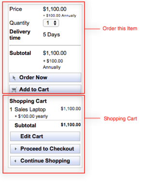 | 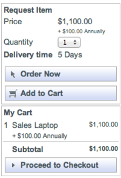 |
{kind=link}
{kind=link}
| |
Note: Both widgets are visible on the standard catalog page and any ESS catalog page. The Shopping Cart widget is also visible in additional locations, such as the catalog homepage. |
4.2 Order Guide Cart Widgets
Select the Item Ordering Widget (Order Guide) record to configure the order guide cart widget that appears when an order guide item is ordered.
For example, the following image shows the default cart widget for an order guide item:
{kind=link}
| |
Note: By default, order guides use a two-step process, and catalog items use a one-step checkout process. If you configure the checkout process, keep in mind that order guides and catalog items may provide different cart experiences if they use different checkout processes. |
5 Shopping Cart Screens
The shopping cart screen displays previews of the cart immediately before an order is placed.
You can configure the layout for either the one-step or two-step catalog checkout process.
5.1 One-Step Process
Select the Cart Preview Screen record to configure the shopping cart screen for use with the default one-step checkout process.
| Default one-step layout | Modified one-step layout |
| 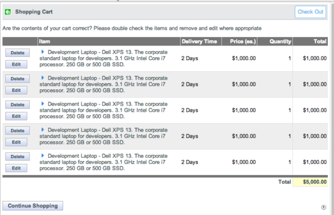 | 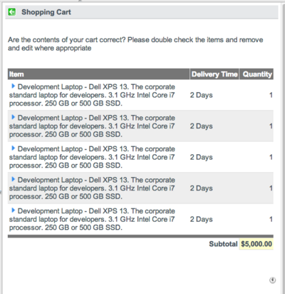 |
{kind=link}
{kind=link}
5.2 Two-Step Process
Select the Cart Preview Screen (Two Step) record to configure the shopping cart screen for use with the two-step checkout process.
| Default two-step layout | Modified two-step layout |
| 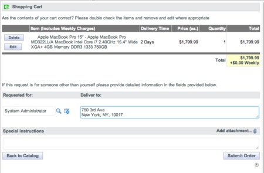 | 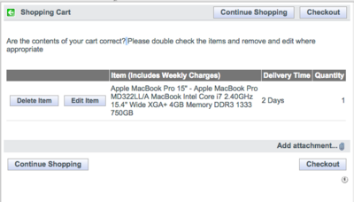 |
{kind=link}
{kind=link}
5.3 Mobile Screen
Select the Cart Preview Screen (Mobile) record to configure the shopping cart screen that displays on mobile devices, which always use a two-step checkout process.
| Default mobile shopping cart screen | Modified mobile shopping cart screen |
| 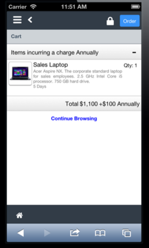 | 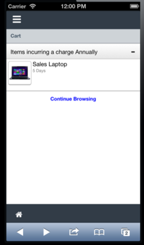 |
{kind=link}
{kind=link}
| |
Note: You cannot configure widget macros or visible button labels for mobile devices. |
6 Order Status Screens
The order status screen is the final summary screen a user sees in the service catalog after placing an order successfully.
6.1 Desktop Screen
Select the Order Status Screen record to configure the order status screen that displays on desktops.
| Default desktop screen | Modified desktop screen |
| 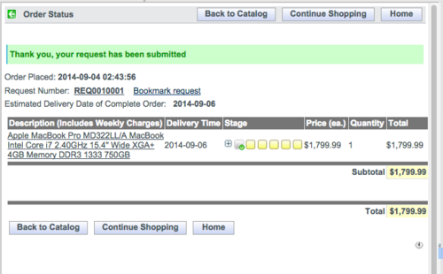 | 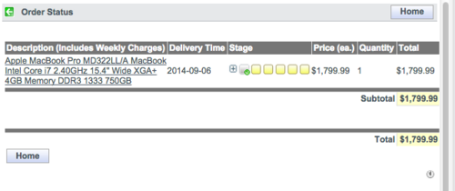 |
{kind=link}
{kind=link}
6.2 Mobile Screen
Select the Order Status Screen (Mobile) record to configure the order status screen that displays on mobile devices.
| Default mobile screen | Modified mobile screen |
| 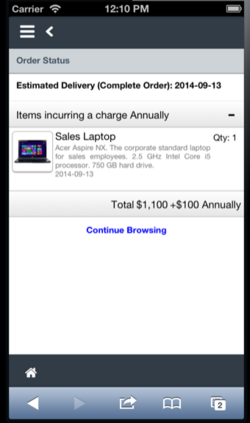 | 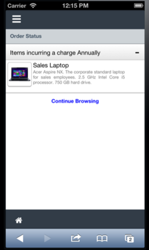 |
{kind=link}
{kind=link}
| |
Note: You cannot configure widget macros or visible button labels for mobile devices. |
7 Creating Macros For Cart Layouts
You can create macros for cart layout records, using Jelly scripts to define customized behavior and display within a widget or screen. Macros that you create do not affect upgrades because customized widget functionality is isolated from general cart behavior.
To create a new macro:
- Open the relevant cart layout record.
- Navigate to the Widget Macros or Column Macro related list.
- Click New.
- Enter details for the macro (see table).
- Save the macro record.
| Field | Description |
|---|---|
| Name | The name for the new macro. |
| Active | A check box to indicate whether the macro is displayed or not. |
| Description | A summary of how the macro is used. |
| XML | The Jelly script to apply for your macro. |
7.1 Example Script: Requested For
This example shows script to add a Requested for reference field as a widget macro to a cart layout record.
<?xml version="1.0" encoding="utf-8" ?>
<j:jelly trim="false" xmlns:j="jelly:core" xmlns:g="glide" xmlns:j2="null" xmlns:g2="null">
<j:set var="ref" value="sc_cart" />
<j:set var="jvar_ref" value="${jvar_cart.getRequestedFor()}" />
<j:set var="jvar_ref_display" value="${jvar_cart.getRequestedForDisplayName()}" />
<tr>
<td colspan="3">
${gs.getMessage('Requested for')}:
</td>
</tr>
<tr>
<td colspan="3" style="padding: 4px;">
<g:catalog_requested_for />
</td>
</tr>
</j:jelly>
8 Overriding Cart Layouts for Items
There are additional methods you can use to configure cart behavior or layouts, which override cart layout record settings.
Be aware of the impact of these additional methods, to ensure your cart behaves in the way you want.
| |
Note: If you are migrating to cart layouts, you may have defined additional settings and properties that impact your cart layout settings. |
8.1 Defining Cart Layout Settings
You can configure layouts for specific catalog items, overriding cart layout record settings.
For example, your cart layout record settings might hide item prices, but you may decide to display the price of the Sales Laptop. In that case, you would set the relevant configuration values on that catalog item.
9 Effects of Properties
Service catalog properties define global behavior. Some of these properties are impacted when you use cart layouts. For example, with the order status screen, the When to show prices and sub-totals on the Service Catalog Cart (glide.sc.price.display) property overrides cart layout settings for displaying prices.
Consider the possible outcomes with service catalog properties that will be impacted when you enable cart layouts, and then alter the settings or properties to achieve the cart layout and functionality you require.
| Property | Impact |
|---|---|
| Allow ESS users the option to cancel their requests from the checkout screen.
[glide.sc.checkout.cancel] |
Overridden when the Cancel Request check box in cart layout settings is selected. If this check box is selected, the Cancel button is displayed even if the property is set to No. |
| Enable cloning requests during checkout.
[glide.sc.allow.checkout.clone] |
Not used (deprecated) if cart layouts are enabled. It is replaced by the Clone Checkout check box in cart layout settings.
The Clone Checkout check box is cleared by default for new instances. For upgraded instances, the check box is set to the existing value of the glide.sc.allow.checkout.clone property. |
| List of roles (comma-separated) that can use the quantity selector in the shopping cart
[glide.sc.allow.quantity] |
Overrides any relevant cart layout settings. |
| Show the request item number for each line item on the checkout screen (default false).
[glide.sc.checkout.request.number] |
Not used (deprecated) if cart layouts are enabled. It is replaced by the Request Item Number column check box in cart layout settings. |
| Show the 'Back to Catalog' button on the two step checkout screen.
[glide.sc.checkout.twostep.back] |
Not used (deprecated) if cart layouts are enabled. It is replaced by the Back to Catalog check box in cart layout settings. |
| When to show prices and sub-totals on the Service Catalog Cart.
[glide.sc.price.display] |
Overrides any relevant cart layout settings. |
Contents > Administer > Security > General Security
Contents > Deliver > IT Services > Service Catalog Management